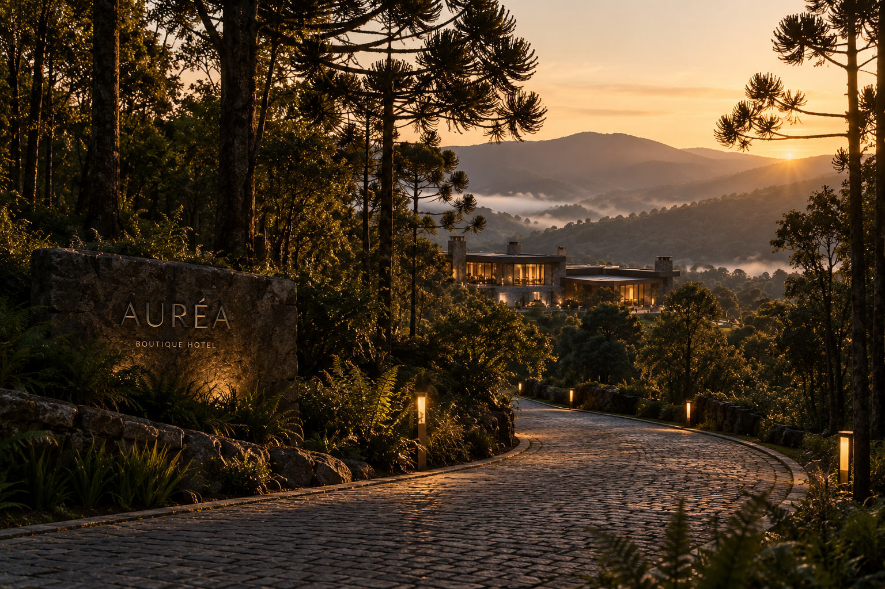

De carro
O acesso ao hotel acontece por uma estrada cênica entre montanhas e vegetação nativa.
ACESSO PRIVATIVO
A AURÉA está na Serra Catarinense, onde a natureza dita um outro ritmo e cada caminho já faz parte da experiência.
Descobrir o destino ↓Entre vales, araucárias e montanhas, a Serra Catarinense guarda paisagens que mudam com a luz, com o clima e com as estações.
A AURÉA está inserida nesse território de forma discreta, respeitando a paisagem e transformando a chegada em parte da experiência.
O acesso ao hotel acontece por uma estrada cênica entre montanhas e vegetação nativa.
ACESSO PRIVATIVOA região pode ser acessada a partir dos principais aeroportos de Santa Catarina, seguida de percurso terrestre.
TRANSFER SOB CONSULTAPara uma chegada ainda mais tranquila, a AURÉA pode organizar transporte privativo.
AGENDAMENTO PRÉVIOCercada por natureza preservada, a AURÉA ocupa um trecho reservado da serra, próximo a rotas de natureza, gastronomia e paisagens de altitude.
Caminhos entre mata nativa, vales e formações naturais.
Paisagens amplas da serra, especialmente ao amanhecer e entardecer.
Sabores regionais, produtores locais e cozinha de altitude.
Araucárias, campos de altitude, rios e florestas preservadas.
Temperaturas mais amenas, dias dourados e paisagens silenciosas.
Frio, lareira, neblina e uma atmosfera ainda mais intimista.
Vegetação viva, manhãs claras e temperaturas agradáveis.
Dias mais longos, natureza intensa e noites frescas de altitude.
Escolha sua acomodação e prepare-se para desacelerar antes mesmo de chegar.
Reservar minha estadia →